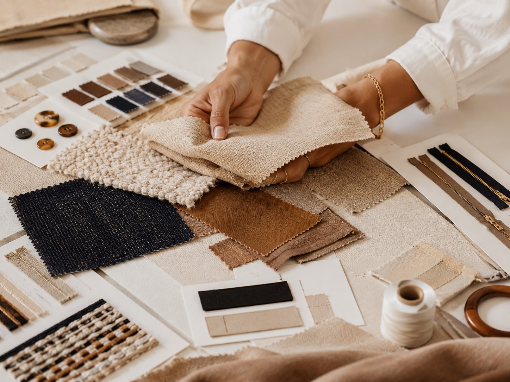

A useful apparel quote starts before anyone calculates a price. It starts with clear product information. Buyers do not need every detail finalized, but the more organized the request is, the easier it is to understand the opportunity and guide the next step.
A better quote begins with a better request.

Start with a clear product description
The product description should explain what the item is, who it is for, and how it will be used. For example, “women’s activewear leggings” is a start, but “women’s high-waist compression leggings for retail sale in Mexico, with four-way stretch and private label branding” is much more useful.
A clear description helps the sourcing team understand the category, performance requirements, and commercial direction.
Include visual references
Photos, samples, sketches, website links, or competitor references help communicate the product faster than words alone. Apparel is visual and tactile. A buyer may describe a product one way, while a supplier interprets it differently. Visual references reduce that gap.
If the buyer has a physical sample, photos of the front, back, seams, labels, fabric texture, and interior construction can help. If a tech pack exists, it should be included as well.
Provide a realistic quantity range
Quantity is one of the most important commercial details. It affects sourcing options, pricing direction, fabric availability, production planning, and whether a project is a good fit.
If the final order quantity is not known yet, provide a range. For example, 500–1,000 units, 2,000–5,000 units, or 10,000+ units. A realistic range is more useful than an ideal number that is unlikely to happen.
Share fabric, composition, or performance needs
If the fabric is known, include the composition, weight, stretch, finish, color, and any performance requirements. If it is not known, describe the feel and use case: soft, structured, lightweight, moisture-wicking, wrinkle-resistant, heavyweight, brushed, ribbed, or breathable.
Fabric direction helps determine whether the product is closer to a standard sourcing path or whether more product development is needed first.
Include target price and timeline if available
A target price does not need to be perfect, but it helps define the commercial goal. Without a target, it can be difficult to know whether a sourcing option is realistic for the buyer’s market.
Timeline is equally important. Some projects have seasonal deadlines, retail launches, school calendars, or promotional windows. Sharing the timeline early helps the team understand urgency and feasibility.
Explain packaging and shipping destination
Packaging can affect cost, timeline, and presentation. Buyers should note whether they need hangtags, polybags, labels, cartons, retail packaging, barcodes, or other requirements.
Shipping destination also matters. A project shipping to Mexico City may have a different planning path than one shipping to another country or to multiple warehouses.

Key takeaways
- Send product description, photos, quantity, fabric direction, target price, timeline, and destination.
- A tech pack is helpful, but a buyer can start with strong references.
- Quantity and target price help define whether the opportunity is commercially realistic.
- The more organized the request, the easier it is to move forward.